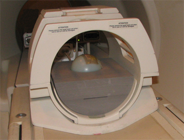
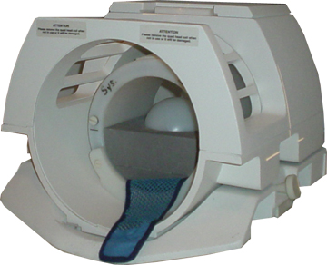
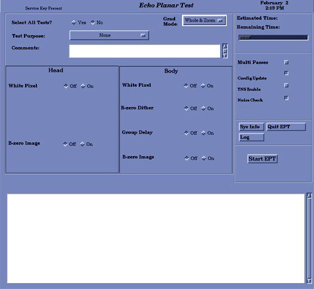

GE Exclusive Use Only
Direction 5670006, Rev# 1
Discovery MR750w GEM Service Methods
Module Version 9.0, Version Date 1/24/11
GE Exclusive Use Only |
| Required Persons | Preliminary Reqs | Procedure | Finalization |
|---|---|---|---|
| 1 | Not Applicable | 2 hours | Not Applicable |
EPT combines the functionality of the current B0 Dither Calibration, Group Delay Calibration and B0 Image Test into a single tool with a simple user interface. The output is suitable for remote support access, trending, and automatic checking of results against acceptance limits. In addition, EPT automatically updates the EPI calibration files when authorized by the user.
| Item | Qty | Effectivity | Part# | Manufacturer | |
|---|---|---|---|---|---|
| 100 mm Sphere Phantom for 3.0T | 2 | 3.0T | 2360034 | - | |
| 100 mm Sphere Phantom for 1.5T | 2 | 1.5T | 46-317586G1 | - | |
| 100 mm Sphere Phantom | 2 | 3.0T/94 | 2258366 | - | |
| EPI Foam Positioner, Body | 1 | - | 2170481 | - | |
| Grafidy Base Plate | 1 | - | 46_317410G1 | - | |
| EPI Head Loader Positioner | 1 | - | 2291292 | - | |
| Head TLT Loader Positioner | 1 | - | 5110241 | - | |
| Head Loader for 3.0T | 1 | 3.0T | 2360031 | - | |
| Head Loader | 1 | - | 46-287899G1 | - | |
| ||||
| Poison hazard | ||||
| 1.5T Phantoms contains nickel, a suspect carcinogen | ||||
| Dispose of as a hazardous waste according to state and federal regulations. |
| ||||
| Poison hazard | ||||
| the 3.0T Phantom contains Silicone. | ||||
| Dispose of as a hazardous waste according to state and federal regulations. |
| Condition | Reference | Effectivity |
|---|---|---|
- | - |
Be aware of the following before starting EPT:
For TwinSpeed, EPT is run for each GradMode, Whole-Body (WB) and Zoom (ZM).
Both GradModes can be selected in a single pass, and both require calibration at least once per installation and during any other routine system tests.
Click [New Pt], and type geservice for the ID.
(For 3.0T systems) (For 1.5T systems) Make sure the correct type of phantom is used for the EPT. Use the pink phantom. Use the green phantom.
For 1.5T and 3.0T systems with LCC 300 or the short bore magnet, place a 100 mm sphere phantom, EPI foam phantom holder, and a phantom loader in the head coil as shown below.
Illustration 1: EPI Phantom - Positioning 1

For 3.0T systems with long bore magnet, place a 100 mm sphere phantom and an EPI foam phantom holder without a phantom loader in the head coil as shown below.
Landmark on the center of the sphere, but do not Advance to Scan.
Illustration 2: EPI Phantom - Positioning 2

Illustration 3: Landmark Marker

Illustration 4: EPI Phantom Positioning in Old Head Coil.

Place an EPI foam phantom holder and a second 100 mm sphere on the Grafidy base plate as shown below.
Illustration 5: Landmark Second Phantom

Move the table into the bore 1100 mm from landmark.
Slide the Grafidy base plate so the center of the 100 mm sphere is at the axial alignment light, and press the [MOVE TO SCAN] button.
Start the Echo Planar Test Calibration tool.
Restricted Service tools available to GE Field Service: Make sure your service key is installed. Select Calibration Wizard from the Calibration menu and [Click here to start this tool].
Once the Calibration Wizard starts, select Echo Planar Test from the menu, review and okay the pre and post-dependencies, and select [Click here to start this tool] to start the procedure.
| NOTE: | If unable to start the Restricted Service tools, use the non-proprietary method described in the next bullet. |
Starting non-proprietary Service tools: From the Common Service Desktop, select [Calibration], [Echo Planar Test] from the Calibration menu, and [Click here to start this tool] to begin the procedure.
The Head Coil being used is preselected as shown below.
Illustration 6: Select Head Coil Being Used

Click the [Start] button.
The Echo Planar Test window (shown below) displays.
Illustration 7: Echo Planar Test Window

For TwinSpeed, the GradMode option displays with three possible entries shown below.
Illustration 8: Echo Planar Test Window with GradMode Option

For calibration, set the Select All Tests option to [Yes] (default is No).
| NOTE: | For troubleshooting, select individual tests as desired. When running EPT with GradMode = Whole & Zoom and selecting run all tests, two separate files (EPT.ZOOM and EPT.WHOLE) are created in /usr/g/service/cclass/ept when the scan is completed. Since the results in the status box of the EPT Test screen will only show the last coil mode run and not both, it is possible to have a failure in the first mode run that is not reported. The work around when running EPT tests, is to select one mode at a time.
|
There are four options on the screen that must be chosen before starting EPT:
Select [Multi Passes] and type an integer in the text box to perform more than one pass of the tests.
Select [Config Update] to update the configuration files with new calibration data if new data is within specifications for one or more of the selected tests.
Select the [TNS Enable] to enable TNS during the EPI white pixel test for troubleshooting purposes. EPT will post a message if the TNS is not connected. Run EPT with the TNS set the same as it is during normal operation.
Enable the baseline [Noise Check] during the EPI white pixel test. This check is done by comparing the mean and standard deviation to set limits. If outside of the limits, the white pixel test will be aborted, which will prevent false results if the receive chain is disconnected or not functioning properly.
Select a Test Purpose from the pull-down menu.
Type two lines of comments if desired. If no comments are entered, the text, NO COMMENT will display in the results file.
| ||||
| Equipment Movement! | ||||
| Initiating the EPT will move the cradle. | ||||
| Take appropriate precautions to ensure that no one will be in its path. |
Select [Start EPT]. Running all the tests takes about one hour and will thoroughly test the EPI performance of the system. This is the recommended mode for baseline, PM, and initial problem-finding.
The Single Test mode is meant to be used while troubleshooting. If possible, run the full set of tests at the end of troubleshooting to verify system performance. While EPT is running, each test will be displayed in the message window indicating the amount of time the test requires to run. (Actual run time of the test may not coincide with the countdown clock displayed on the interface.)
| NOTE: | EPT will create many images. If not enough space is available, a window will display to inform of this situation. |
If the B-zero Image fails during the EPT, quit the EPT and run the Image-Based Short Cross-Term Eddy Current tool. This tool may reduce EPI ghosting and is designed to work in conjunction with the EPT. If B-zero Image passes, proceed to Step .
| NOTE: | Consider running this test even if the B-zero image passed. Based on past experience, this may improve image quality. |
Quit the EPT.
Open a C-shell by clicking on the [C Shell...] button in the Service Desktop Manager, and type /usr/g/bin/runsct.
The tool's window appears.
Click [Apply and Scan].
The tool checks the eddy current compensation parameters first. If the long cross-term compensation is not significant, the following message will display: The long xy alpha value (2 terms added) is: value. The correction would be too small to make improvement. Short cross term correction is not required. This tool does not need to be run.
Click [Exit]. The tool quits and cross-term compensation is removed. Troubleshoot the system for other ghosting sources by referring to Troubleshooting EPI Ghosting Problems.
If the system determines that correcting the short cross-term values may fix the ghosting problem, compensation is applied and the B-zero Image scan starts with the new values. Data collection takes 10-15 minutes and the resulting ghosting level is measured and displayed.
| NOTE: | Clicking [Abort] prior to completion of the test stops data acquisition and removes the short cross-term compensation values added by the tool. |
If the B-zero Image passes, the procedure is complete and the results are displayed. Click [Exit] and rerun the EPT tool (shown in Step ).
When running the tool, go to the Body section of the Test Options page and click Off next to the B-zero Image. This saves time by not rerunning this part of the EPT.
If the B-zero Image results are not within specification, the cross-term compensation is removed. Click [Exit] and troubleshoot the system for other ghosting sources as detailed in Troubleshooting EPI Ghosting Problems.
Once EPI ghosting problems are brought into specification, rerun the EPT and proceed to the next section.
When the tests are complete, one of four messages below displays:
Your tests completed successfully,
A minor system problem has been detected. This problem is NOT expected to affect image quality,
A serious system problem has been detected. This problem IS expected to impact image quality, or
EPT was unable to determine PASS/FAIL status of the tests.
Select [Quit EPT], and confirm when a confirmation window displays.
| NOTE: | If the EPT process is not shut down in an orderly manner,
the service protocol directions may need to be reset. This can be
done by opening a C-shell and typing: cd /usr/g/service/cclass/ept and pressing <Enter> resetept and pressing <Enter> |
Reset the TPS to bring the system back into a known mode.
Do a test scan to ensure the scanner is working properly before turning the system over to the customer.